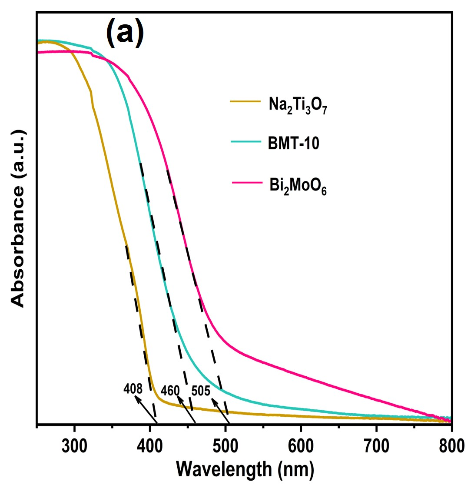
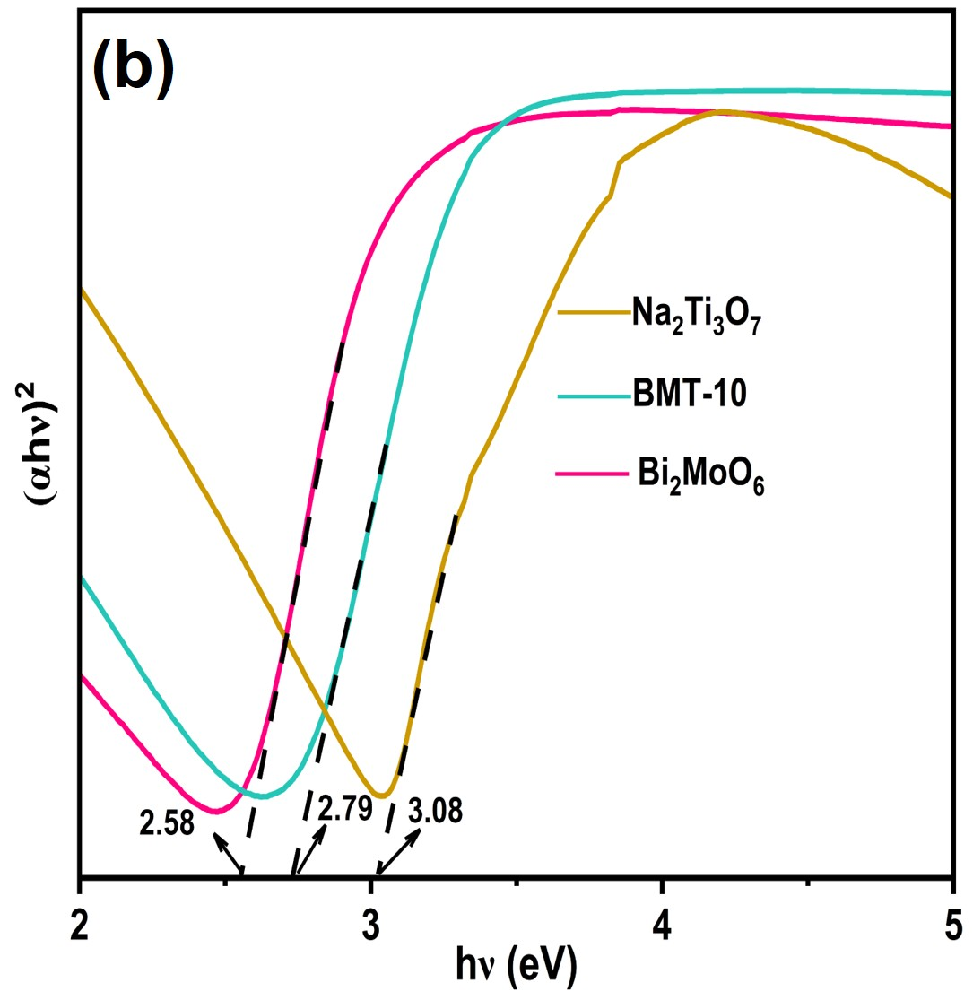
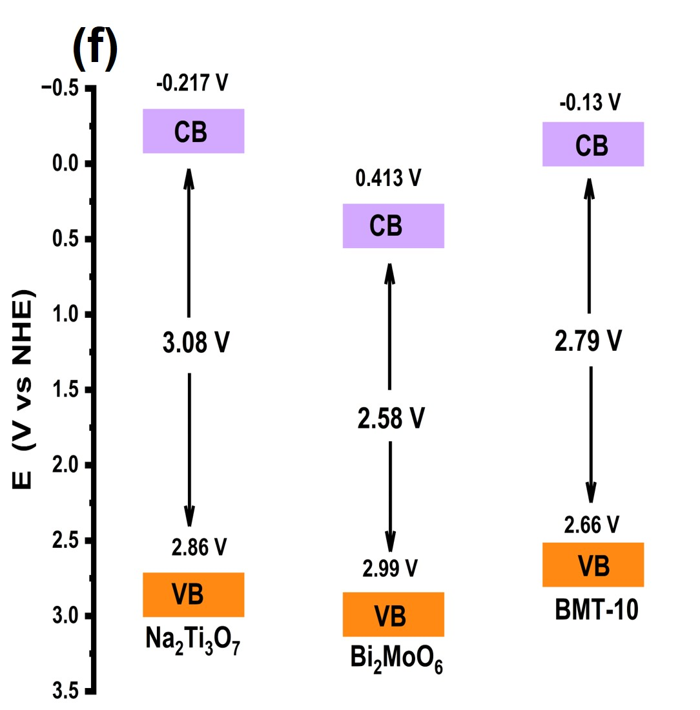
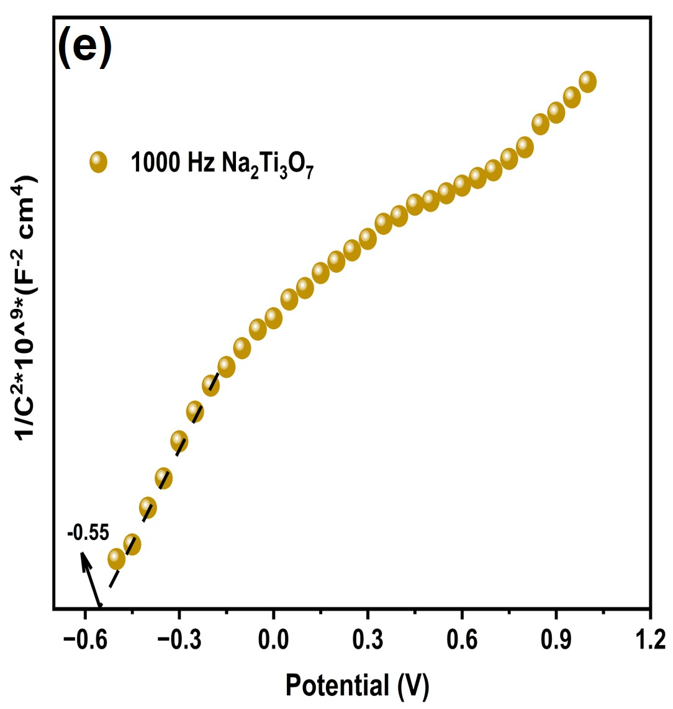
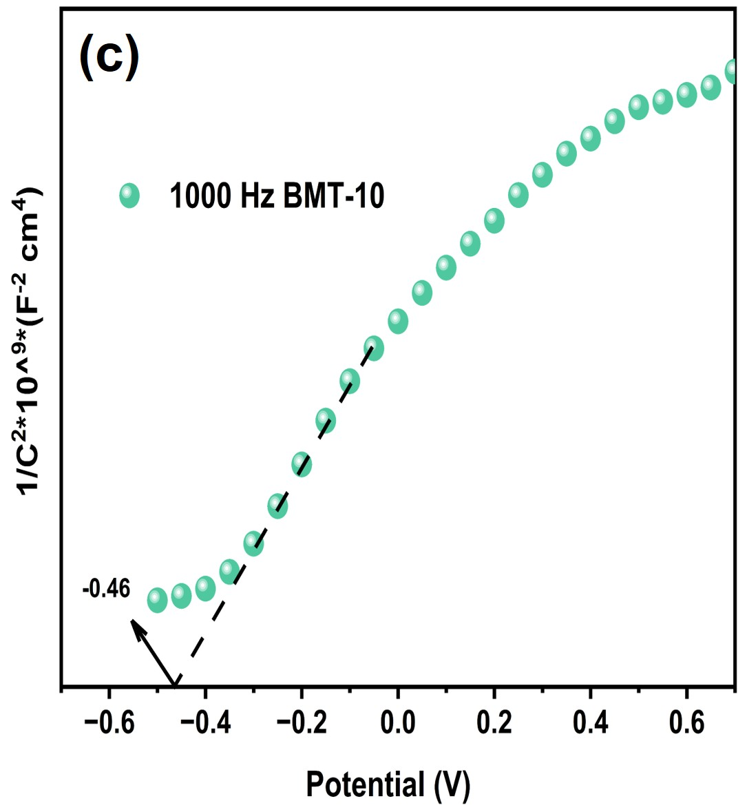
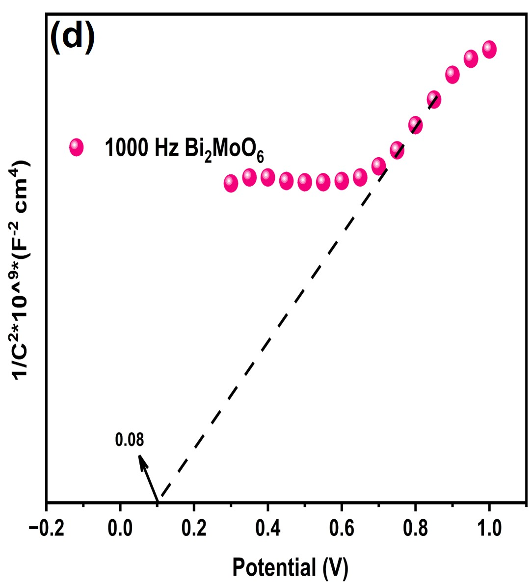

This project focused on engineering a 0D/1D semiconductor heterostructure for the selective photocatalytic oxidation of benzyl alcohol to benzaldehyde under blue-light irradiation.
Selective photocatalytic oxidation of benzyl alcohol to benzaldehyde requires a photocatalyst that can efficiently utilize visible light, separate photogenerated charge carriers, and activate molecular oxygen while maintaining high product selectivity. Na₂Ti₃O₇ is an attractive photocatalytic material because of its stable titanate framework composed of TiO₆ octahedra, favorable surface chemistry, low cost, and chemical stability. However, its relatively wide band gap limits visible-light absorption, while inefficient electron–hole separation restricts its photocatalytic performance.
To overcome these limitations, Bi₂MoO₆ was coupled with Na₂Ti₃O₇ nanotubes to construct a semiconductor heterostructure. Bi₂MoO₆ possesses a layered Aurivillius structure with a narrower band gap and favorable charge-transport characteristics, enabling stronger visible-light absorption. The resulting Bi₂MoO₆/Na₂Ti₃O₇ heterointerface was designed to enhance light harvesting, promote interfacial charge transfer, suppress electron–hole recombination, and thereby improve the selective photocatalytic oxidation of benzyl alcohol to benzaldehyde under visible-light irradiation.
A 0D/1D Bi₂MoO₆/Na₂Ti₃O₇ heterostructure was synthesized using an in-situ hydrothermal strategy. The optimized BMT-10 sample contained 10 wt% Bi₂MoO₆ supported on Na₂Ti₃O₇ nanotubes.
The optimized heterostructure showed high activity for selective oxidation of benzyl alcohol to benzaldehyde under blue-light irradiation. GC–MS analysis confirmed benzaldehyde as the selective oxidation product.
To understand the interfacial charge-transfer behavior of the BMT-10 heterostructure, optical and electrochemical measurements were combined to determine the band-gap energies and semiconductor band positions. These results were subsequently used to construct the proposed Z-scheme charge-transfer pathway.



Diffuse reflectance data were transformed using the Kubelka–Munk function:
The transformed diffuse-reflectance data were then analyzed using the Tauc relationship for direct optical transitions:
Positive slopes in the Mott–Schottky plots confirmed n-type semiconductor behavior. The experimentally determined flat-band potentials were converted to the NHE scale and used to estimate the conduction-band positions.



Combining the optical band-gap energies with the Mott–Schottky-derived band positions enabled construction of the semiconductor band diagram. The resulting alignment supports a Z-scheme charge-transfer pathway, while EIS and transient photocurrent measurements further indicated improved charge migration and reduced electron–hole recombination in the BMT-10 heterostructure.
0D/1D Heterostructure of Bismuth Molybdate Cluster-Anchored Sodium Titanate Nanotubes for Blue-Light-Driven Photooxidation
ACS Applied Nano Materials, 2025
View Published Article